Базовое оружие и примеры одновременной установки нескольких модулей. Изображения собраны тем же Lua-селектором, который используется интерфейсом игры.
Мягкий контур в этой галерее рассчитан офлайн; реальный игровой эффект glow смотрите на скриншотах ниже.
Магазины: профиль · Магазины: ракурс 45°
АК-103: интерфейс · АК-47 / Type56 / M92 · M70 / DesertEagle / HiPower
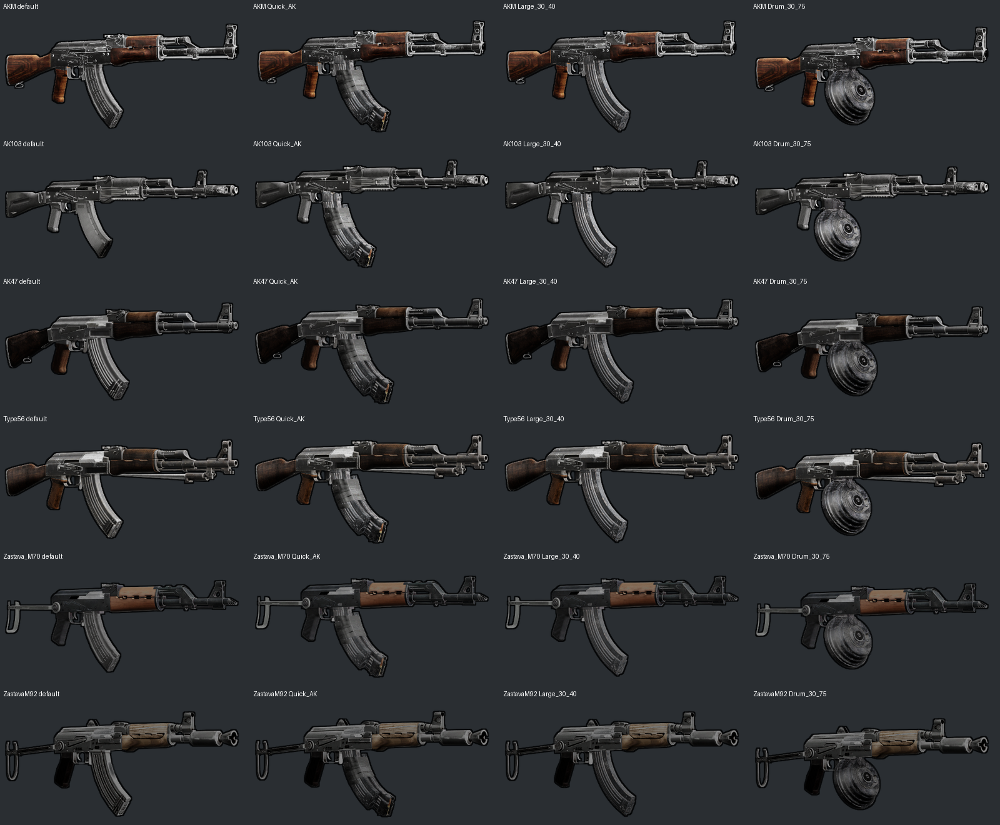
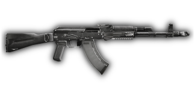
По умолчанию
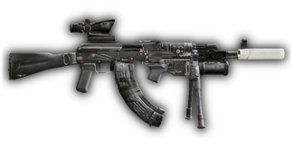
Side = JAZZ_FlashlightOff Under = JAZZ_GP25 Bipod = JAZZ_Bipod Magazine = JAZZ_MagQuick_AK Scope = JAZZ_CombatScope_ACOG Muzzle = JAZZ_SuppressorImproved
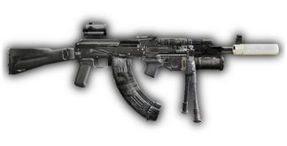
Side = JAZZ_FlashlightDot Under = JAZZ_GP25 Bipod = JAZZ_Bipod Magazine = JAZZ_MagQuick_AK Scope = JAZZ_Reflex_Closed Muzzle = JAZZ_SuppressorImproved
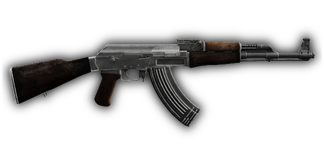
По умолчанию
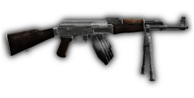
Magazine = JAZZ_MagDrum_30_75 Bipod = JAZZ_Bipod
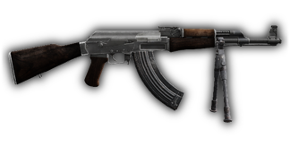
Magazine = JAZZ_MagLarge_30_40 Bipod = JAZZ_Bipod
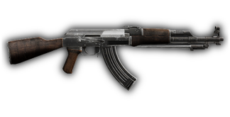
По умолчанию
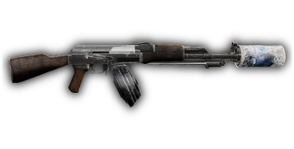
Magazine = JAZZ_MagDrum_30_75 Muzzle = JAZZ_ImprovisedSuppressor
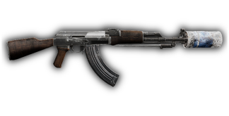
Magazine = JAZZ_MagLarge_30_40 Muzzle = JAZZ_ImprovisedSuppressor
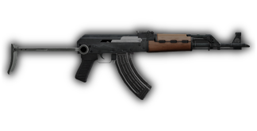
По умолчанию
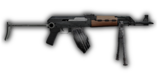
Bipod = JAZZ_Bipod Magazine = JAZZ_MagDrum_30_75
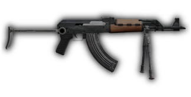
Bipod = JAZZ_Bipod Magazine = JAZZ_MagLarge_30_40
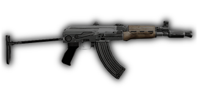
По умолчанию
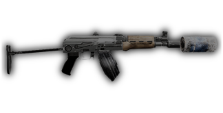
Magazine = JAZZ_MagDrum_30_75 Muzzle = JAZZ_ImprovisedSuppressor
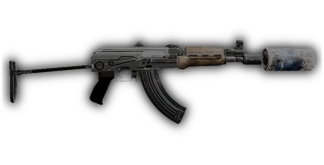
Magazine = JAZZ_MagLarge_30_40 Muzzle = JAZZ_ImprovisedSuppressor
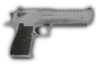
По умолчанию
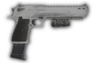
Magazine = JAZZ_MagLarge_13_PISTOL_DE Side = JAZZ_FlashlightDot Barrel = JAZZ_Barrel50BMG_DesertEagle
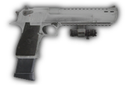
Magazine = JAZZ_MagLarge_13_PISTOL_DE Side = JAZZ_LaserDot Barrel = JAZZ_Barrel50BMG_DesertEagle
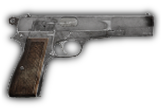
По умолчанию
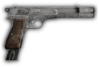
Magazine = JAZZ_MagLarge_25_PISTOL_9 Muzzle = JAZZ_Compensator
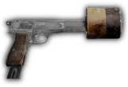
Magazine = JAZZ_MagLarge_25_PISTOL_9 Muzzle = JAZZ_ImprovisedSuppressor